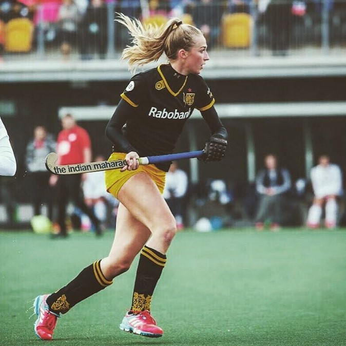
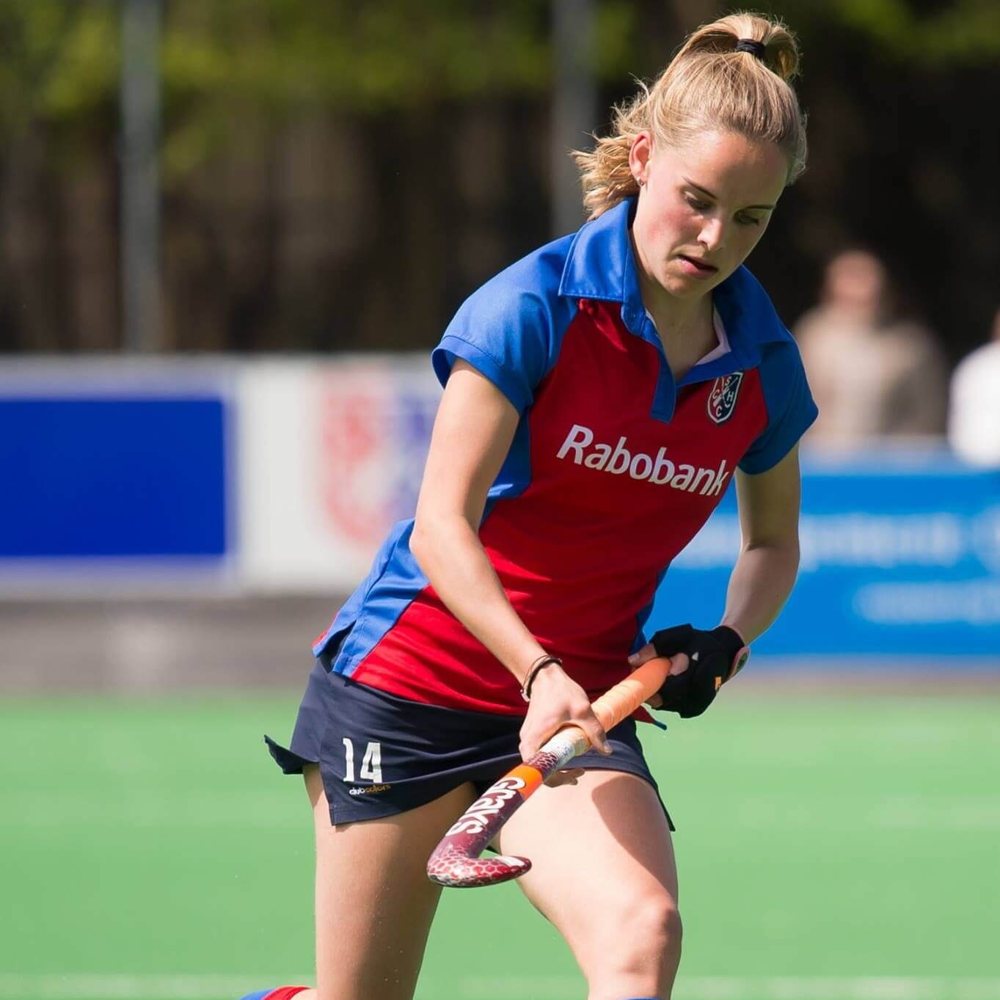
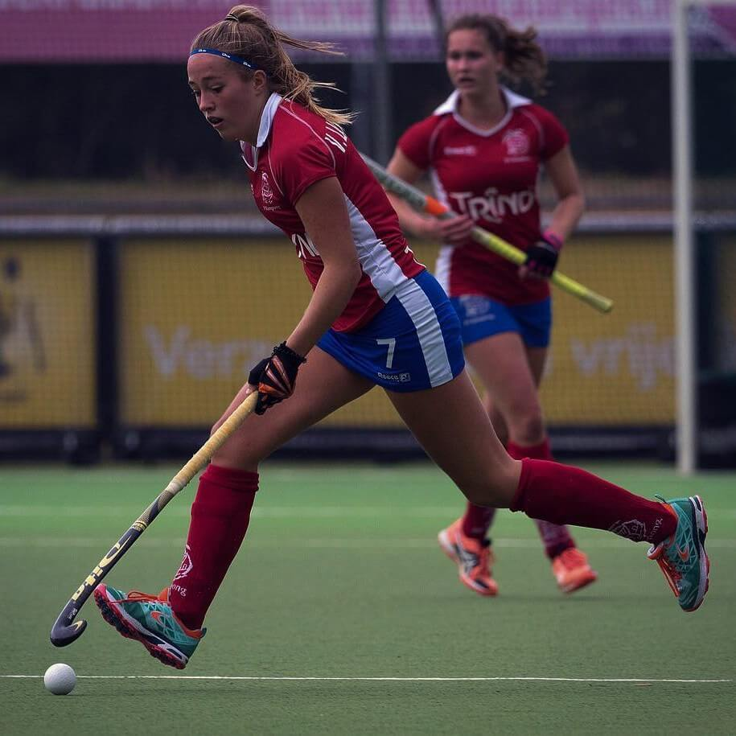
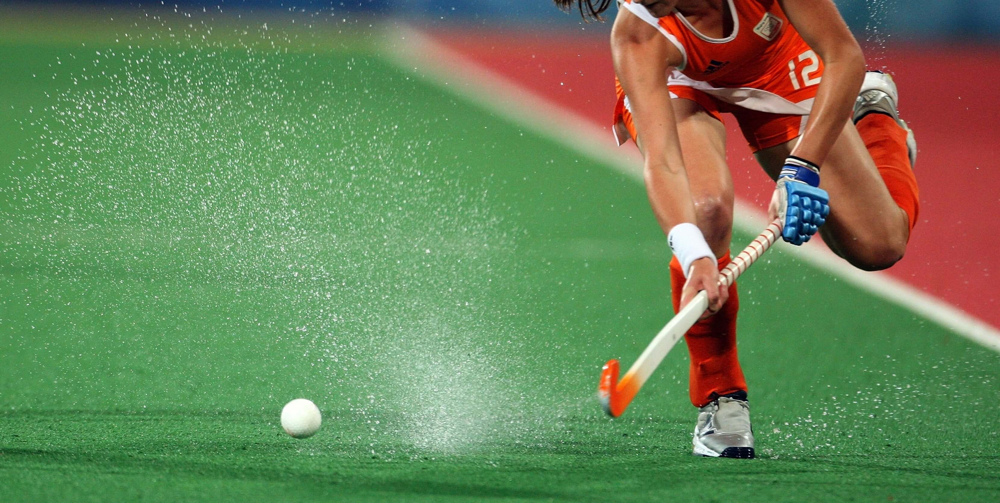

Talent Empowerment biedt jonge topsporttalenten extra begeleiding en ondersteuning, die hen helpt het maximale uit hun sportieve en maatschappelijke carrière te halen
Talentenprogramma
Onderweg naar de top wordt er als jong topsporttalent enorm veel van je gevraagd. Je moet presteren bij je club, je moet bij de besten van je leeftijd horen om in de nationale teams te komen, je moet tussendoor “gewoon” nog even je studiepunten halen en daarnaast nog alle randzaken regelen zoals financiën en sponsoring. En dat kan allemaal best wel eens ingewikkeld zijn soms. Daarvoor is Talent Empowerment: om de begeleiding en ondersteuning te bieden, die jonge topsporttalenten helpt om de juiste keuzes te maken en de weg naar je persoonlijke top te vinden.
ProgrammaOnderdelen
Mentoring
Elke topsporter krijgt een persoonlijke mentor. Deze persoonlijke mentor is een oud-topsporter die alle pieken en dalen al een keer heeft meegemaakt, en de sporter zo vanuit zijn of haar ervaring kan helpen en begeleiden.Trainingen &
Workshops
Talent Empowerment organiseert met haar partners elk jaar enkele interactieve workshops waarin onderwerpen naar voren komen die voor de sporters interessant en relevant zijn. Voorbeelden hiervan zijn maatschappelijke ontwikkeling en financiën.Sport meets Business
Ook organiseert Talent Empowerment elk jaar workshops waar bedrijven en topsporters elkaar ontmoeten. Door deze parallel te trekken, doen de jonge topsporttalenten al in een vroeg stadium van hun carrière relevante kennis, ervaring en (zakelijke) netwerk op. En dat is goed voor je maatschappelijke ontwikkeling!& More
Van juridisch advies tot sportpsychologie, van sponsorbemiddeling tot mobiliteitsoplossingen: Talent Empowerment biedt een platform aan diensten waarop de topsporter naargelang persoonlijke behoefte een beroep kan doen.
"BIJ TALENT EMPOWERMENT ORGANISEREN WE COLLECTIEVE WORKSHOPS OM BEPAALDE THEMA'S NAAR VOREN TE BRENGEN, MAAR PERSOONLIJKE BEGELEIDING STAAT ALTIJD CENTRAAL"
-Karin den Ouden, ex-tophockeyer, Talent Empowerment mentor
HockeyBazen
-

- Frédérique Matla
- Geboortedatum: 28-12-1996
- Club: HC Den Bosch
- Positie: Middenveld/Aanval
- Studie: Gezondheid en Maatschappij, Wageningen
- Website: www.frederiquematla.nl
- Heb jij een vraag voor Frédérique, of ben je geïnteresseerd in een clinic of andere samenwerking? Neem dan contact op met Laurens@HockeyBaas.nl.
-

- Josine Koning
- Geboortedatum: 02-09-1995
- Club: HC Den Bosch
- Positie: Keeper
- Studie: Rechten, Utrecht
- Heb jij een vraag voor Josine, of ben je geïnteresseerd in een clinic, presentatie of een andere samenwerking? Neem dan contact op met Laurens@HockeyBaas.nl
-

- Maxime Kerstholt
- Geboortedatum: 24-02-1996
- Club: LMHC Laren
- Positie: Aanval
- Studie: Economics, UvA Amsterdam
- Heb jij een vraag voor Frédérique, of ben je geïnteresseerd in een clinic of andere samenwerking? Neem dan contact op met Laurens@HockeyBaas.nl.
-

- Pien Sanders
- Geboortedatum: 11-06-1998
- Club: HC Den Bosch
- Positie: Verdediging
- Studie: Studie: Sport & Bewegen
- Heb jij een vraag voor Frédérique, of ben je geïnteresseerd in een clinic of andere samenwerking? Neem dan contact op met Laurens@HockeyBaas.nl.
-

- Sanne Koolen
- Geboortedatum: 23-3-1996
- Club: HC Den Bosch
- Positie: Verdediging
- Studie: Geneeskunde, VU Amsterdam
- Heb jij een vraag voor Frédérique, of ben je geïnteresseerd in een clinic of andere samenwerking? Neem dan contact op met Laurens@HockeyBaas.nl.
-

- Famke Richardson
- Geboortedatum:
- Club: SCHC
- Positie:
- Studie:
- Heb jij een vraag voor Frédérique, of ben je geïnteresseerd in een clinic of andere samenwerking? Neem dan contact op met Bertram@HockeyBaas.nl.
-

- Hester van der Veld
- Geboortedatum:
- Club: HDM
- Positie:
- Studie:
- Heb jij een vraag voor Frédérique, of ben je geïnteresseerd in een clinic of andere samenwerking? Neem dan contact op met Bertram@HockeyBaas.nl.
-

- Marijn Veen
- Geboortedatum:
- Club: AH&BC Amsterdam
- Positie:
- Studie:
- Heb jij een vraag voor Frédérique, of ben je geïnteresseerd in een clinic of andere samenwerking? Neem dan contact op met Bertram@HockeyBaas.nl.
-

- Renee van Laarhoven
- Geboortedatum:
- Club: SV Kampong
- Positie:
- Studie:
- Heb jij een vraag voor Frédérique, of ben je geïnteresseerd in een clinic of andere samenwerking? Neem dan contact op met Bertram@HockeyBaas.nl.
-

- Famke Richardson
- Geboortedatum:
- Club: HC Oranje Rood
- Positie:
- Studie:
- Heb jij een vraag voor Frédérique, of ben je geïnteresseerd in een clinic of andere samenwerking? Neem dan contact op met Bertram@HockeyBaas.nl.
hallo
Voor meer informatie, stuur een mail naar Laurens@talentempowerment.nl

voor
Topsporters

door
Topstudenten

Join our team